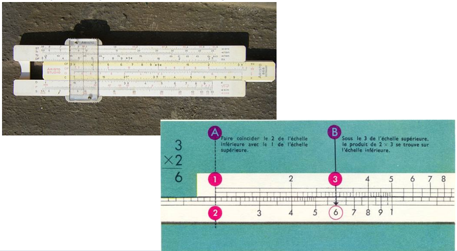
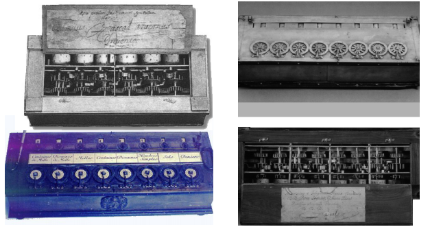
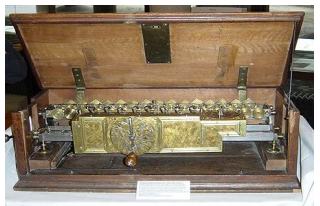

Quelques définitions
L’informatique : C’est la science de traitement de l’information.
C’est aussi le traitement automatisé de l’information au moyen d’un
programme enregistré.
L’information : L’information est définie comme l’ensemble des
instructions d’un programme et des données manipulées par ce
programme. Les instructions constituent les programmes exécutables.
Les données peuvent être de différents types: valeurs numériques,
textes, images, sons, ... De manière interne, toutes ces informations
sont converties sous forme numérique.
L’ordinateur : L’ordinateur est une machine de traitement
l'information. Un ordinateur est donc capable d’acquérir et de
conserver des informations, d’effectuer des traitements et de
restituer les informations stockées. Les notions de matériel et de
logiciel sont indissociables. Un ordinateur sans logiciel est inutile.
Les limites entre micro-ordinateurs, mini-ordinateurs et ordinateurs
sont fixées en terme de puissance mais sont celles-ci sont "floues".
Le système informatique : Le système informatique est l’ensemble des
moyens logiciels (Software) et matériels (Hardware) nécessaires pour
satisfaire les besoins informatiques des utilisateurs.
Au XVIIè et XVIIIè siècle
1632 : Oughtred (Angleterre) : Création de la règle à calcul.

1642 : Pascal (France) : Fabrication de la première machine à calculer
permettant l'addition et la soustraction par complément.
1666 : Moreland (Angleterre) : Multiplication par additions
successives.

1668 : Liebnitz (Allemagne) : Machine de Liebnitz effectuant
multiplications et divisions.
1770 : Hahn (Allemagne) : Première machine à calculer exécutant
directement les 4 opérations. (fondée sur le cylindre denté inventé
par Liebnitz en 1668).

Au XIXè siècle
1801 : Jacquard (France) : Contrôle de métiers à tisser par carton
perforé.
1820 : Charles Xavier Thomas (France Colmar) : Arithmometre
(6 à 20 chiffres) Premier succès commercial : 1500 exemplaires vendus
entre 1823 et 1870, mais plus d’un million au total car utilisé
jusqu’à la première guerre mondiale par les banques assurances et
administrations. CX Thomas a fondé la compagnie d’assurance qui est
devenue, après de multiples restructuration la GAN.

1833 : Babbage (Angleterre) : Définit les grands principes des
calculatrices électroniques contenant les concepts d’unité de calcul,
mémoire, registre et entrée des données par carte perforée.

1840 : Ada Lovelace : Collaboratrice de Babbage définit le principe
d’itérations successive dans l’exécution d’une opération et nomme ce
processus algorithme en l’honneur du mathématicien arabe Al
Khwarizmi.
1854 : Boole (Angleterre) : Calcul binaire.
1880-90 : Herman Hollerith (USA) : Machine à cartes perforées utilisée
pour le recensement américain de 1890. Résultat obtenu en 6 semaines
au lieu de plusieurs années au précédent.

Première machine à traiter l’information : H Burroughs, Scheuts,
Wiberg (Suède), Odhnen (Allemagne), Bollée (France),
Kelvin (Angleterre), Jahns (Suisse) : Mise au point de plusieurs
machines à calculer avec ou sans clavier, imprimantes ou non, et de
machines « comptables ».
Au XXè siècle
De 1900 à 1920
1904 : J. Fleming : Invention du tube à vide.
1906 : De Forrest et J. Bryce (USA) : Invention et industrialisation
des tubes à vide.
1907 : Lee De Forest : Invente la triode.

1919 : Eccles-Jordan (USA) : Première bascule électronique.
Flip-flop
De 1920 à 1940
1924 : Tabulating Machine Corporation fondée par Herman Hollerith
devient IBM.

1930 : L'énigma est utilisée par les Allemands durant la Seconde
Guerre Mondiale pour coder leurs messages.

1937 : A.M. Turing (mathématicien et cryptologue) résout des
problèmes mathématiques à l’aide d’une bande de papier, de pions et
d’un trombone ! C’est la machine de Turing. Définition des concepts de
programme et programmation. (Appli: 2eme guerre mondiale: Décodage des
codes de la machine Enigma)

1938 : Shannon dans sa thèse fait le parallèle entre circuit
électrique et algèbre booléenne. Il définit le chiffre binaire : bit
(BInary digiT)
1938 : K. Zuse crée le Z1, ordinateur binaire programmable
mécanique, puis en 1939, le Z2 (mécanique remplacée par des relais,
puis en 1941, le Z3 à programme enregistré (mémoire de 64 nbs de 22
bits, 4 add/sec, 1mul/4sec.
De 1940 à 1950
1943 : Thomas Watson, IBM : « Je pense qu’il y a un marché mondial
pour au moins 5 ordinateurs. »
1944 : H. Aiken et IBM (Université Harvard USA) : Calculateur
automatique Mark 1 (3000 relais, 800 km). Fonctionnement inspiré par
Babbage.

1945 : Un insecte coincé dans la Mark I bloque son fonctionnement.
La mathématicienne G.M. Hopper décide que tout ce qui arrêtera le bon
fonctionnement d ’un programme s’appellera BUG.

1946 : Prosper Eckert et John Mauchly rejoints par Von Neumann (More
School de l'université de Pennsylvannie) : "Electronic Numerical
Integrator and Computer« : ENIAC. 1000 fois plus rapide que le Mark 1:
(30 tonnes, 17468 tubes électroniques, 70000 résistances, 10000
capacités, 1500 relais, 6000 commutateurs Consommation: 150 000 Watts.
72 m2. 100kHz, 330 mul/sec.

Enchaînement des opérations en manuel : Rotation des commutateurs,
branchement pour chaque opération des centaines de câbles. Relais
électromécaniques sont remplacés par des circuits électroniques et
pour la première fois des impulsions électriques sont utilisées pour
mettre les lampes à vide en position allumée ou éteinte, ouverte ou
fermée. 100 000 additions à la seconde contre près de 4 500 000 000
pour les machines les plus puissantes actuelles.
1946 : Von Neumann : Invention du système de codage binaire. Première
construction: Electronic Discrete Variable Computer (EDVAC).
1947 : Bell Telephone (USA) : Invention du transistor.
1947 : Eckert et Mauchly (USA) : Création d’Univac.
1948 : Bardeen-Frattain et Schockey (USA) : Industrialisation du
transistor.
1949 : Revue Popular Mechanics : « Alors que le calculateur ENIAC
est équipé de 18000 tubes à vide et pèse 30 tonnes, les futurs
ordinateurs de l’an 2000 ne devraient avoir que 1000 tubes à vide et
ne peser que 1,5 tonnes. »
1949 : Wilkes (Angleterre) : Premier calculateur auto-électronique à
programme enregistré EDSAC.
1949 : IBM (USA) : Commercialisation du CPC, calculateur automatique à
carte-programme.
De 1950 à 1960
1950 : Wilkes : Invention de l’assembleur.
1951 : Eckert et Mauchly (USA) : Univac 1 : Première machine à usage
civil ; Refusée par IBM mais acceptée par Remington qui contrôle tout
le marché civil de 1952 à 1954.
1951 : Premier calculateur électronique de la société Bull.
1954 : Mémoire à tores de ferrite.

1952 : Von Neumann : Architecture Von Neumann. Utilisée comme modèle à
ce jour :
• Unité de Traitement avec l’Unité Arithmétique et Logique et les
accumulateurs
• Unité de Commande séquentielle avec possibilité de rupture de
séquence
• Programme enregistré dans la Mémoire
• Unités d'entrées et de sorties.

1956 : 1er disque dur, le RAMAC 305 par IBM (50 disques de 61 cm - 5
Mo)

De 1960 à 1980
1963 : Première Souris, inventée par Douglas ENGELBART
 Vue du dessous de la première souris.
Vue du dessous de la première souris.
1969 : Intel reçoit une requête de la compagnie japonaise ETI pour
concevoir les circuits intégrés d'une ligne de calculatrices. Marcian
(Ted) Hoff d'Intel conçoit une puce de circuits intégrés capable de
recevoir des instructions et réaliser des fonctions simples sur des
données. Cette puce est devenue le microprocesseur 4004.
1970 : Début de la révolution de la mini informatique.
1971 (15 novembre) : Mise en vente du premier microprocesseur.
Intel commercialise le microprocesseur: "Intel 4004" ; 200 dollars.
Le processeur 4 bits permettra le développement des
micro-ordinateurs.

1972 (Commercialisation Février 1973) : Le premier micro-ordinateur
est d'origine française. Il s'agit du Micral. Son inventeur est
François Gernelle de la société R2E (PDG: André Truong, Truong Thi).
(Il a été crée suite à une commande de lʼINRA- agronomie): première
réalisation mondiale d'un système d'ordinateur universel à base de
micro-processeur (le 8008), livré complet.

1976 : L’APPLE 1.

De 1980 à 2000
1981 : L’IBM « Personal Computer »
1983 : IBM commercialise son PC-AT à disques durs.
1985 (Novembre) : Date de sortie de Windows 1.0
1987 : IBM commercialise son PS/2.

1987 (Décembre) : Date de sortie de Windows 2.0
1990 (Mai) : Date de sortie de Windows 3.0
1991 : La révolution de la micro-informatique arrive en Europe. Les
grandes surfaces commencent à commercialiser des PC.
1995 (Août) : Date de sortie de Windows 95. Le son et la vidéo sont
gérés en standard par ce système d'exploitation.
1998 (Juin) : Date de sortie de Windows 98 qui intègre en standard
la communication sur le réseau Internet.
2000 (Février) : Date de sortie de Windows 2000